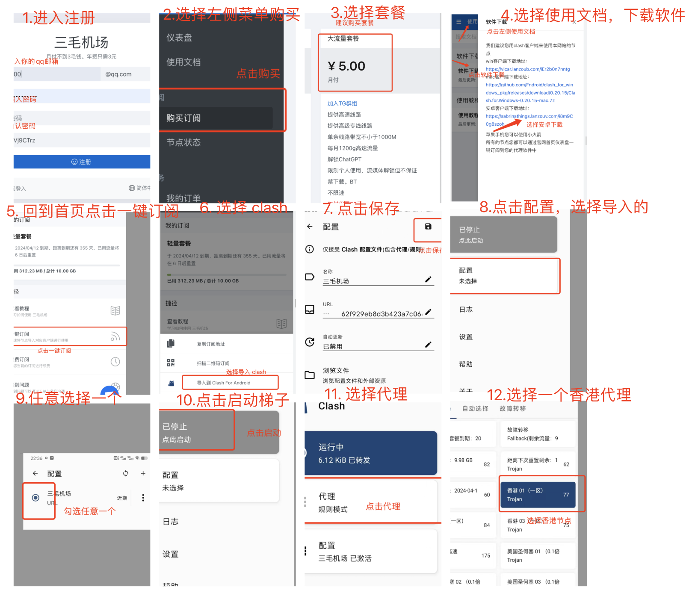
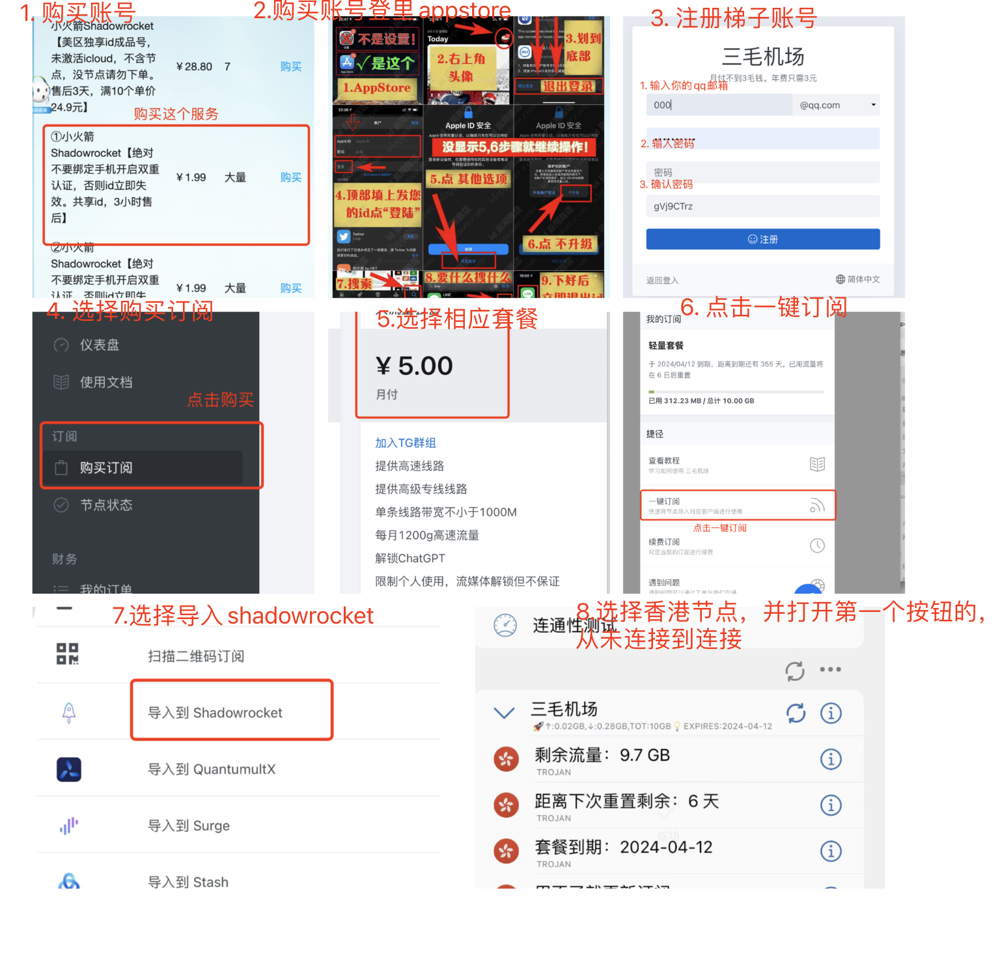

整理分为 4 个大步骤
特别注意，华为需要收费，请联系具体的对接人
这是海外用户的加速器，主要是给海外用户加速使用。
梯子注册地址
看不懂的看下面的图片教程！！！！！！
看不懂的可以看图片教程

可以前往这里购买
https://idappstore.cc/
打不开上面的用下面的
https://appidshop.com/
<font color="#dd0000">（特别申明：自己负责，不是我的服务，有问题找平台客服）</font>，里面有专门的小火箭 shadowrocket 1.99元的账户(请注意2个条件，1.99元以及叫做shadowrocket)，购买后，请按照他们官方提供的操作方法。
登录成功请下载2个软件，一个叫做 shadowrocket 一个叫做 telegram
没有用海外ID下载的软件，都是假的！！没有用海外ID下载的软件，都是假的！！没有用海外ID下载的软件，都是假的！！
梯子注册地址
看不懂的看下面的图片教程！！！！
看不懂的可以看图片教程

首先打开我们上面的梯子，<font color="#dd0000">请注意我们用的是官方网站下载，一定要打开梯子</font>，选择香港节点就行了，然后打开下面链接
有最新APK，下载地址如下
https://telegram.org/android
没法使用官网下载，可以前往这里，广告有点多，需要耐心点击
https://upfiles.com/TCTCT6
这是官网地址，只有英文版本，进入app后可以切换，关于如何切换中文版本查看其他人的抖音视频：https://v.douyin.com/AEypu4V/
在前面已经下载好了电报这里就不用下载了
请务必打开代理梯子，就我们第一步下载的应用，选择香港节点即可，然后点第一个启动按钮，显示如下图所示就可以了。<font color="#dd0000">一定要确保这一步是正确的，一般在你的手机的最上面的信息栏可以看到 VPN 标识，就可以了。</font>
进入APP就可以使用手机号注册，直接输入手机号，然后等待验证码，如下所示。请注意这里很多用户反馈收不到验证码，我也一样，偶尔收不到，大家一定要多试几次，如果确实收不到了换个手机尝试一下，如果几天尝试都失败，看我最下面的使用接码平台注册的方法。
正常用注册的账号登陆即可
电报最重要的功能就是群，如何找到你想要的群和资源，就是通过这个群可以去定位到。进去以后你是空白的，点击搜索栏，输入下面的地址，或者输入@chineseSearchService 第一个就是第三方的搜索群了。
https://t.me/chineseSearchService
请注意是在消息页面搜索，不用前往联系人页面，iOS是第二个菜单
如下，进群后，输入你想要搜索的群，这就是正常的搜索引擎。
加入 https://t.me/chineseSearchService 该群，进群后，回复中文会返回2个切换的链接，随便选择一个就行。
电报太多骗子，一般主动私聊你的都是骗子，大家不要存在侥幸心理，不要在电报进行任何交易，电报主要是获取资源的渠道。
骗子手法太多，防不胜防，建议大家不要理会主动私聊你的人
这里需要注意，大家切换苹果商店账号，可以前往 设置->个人信息->媒体与购买->退出登陆->返回前一个页面->再次进入个人信息->点击媒体与购买->选择不是xxx->输入你的苹果id即可，不要全部退出
海外苹果免费账号分享，这个平台也有提示 https://freevpn007.cf/share.html
<font color="#dd0000">其他问题请提issue</font>